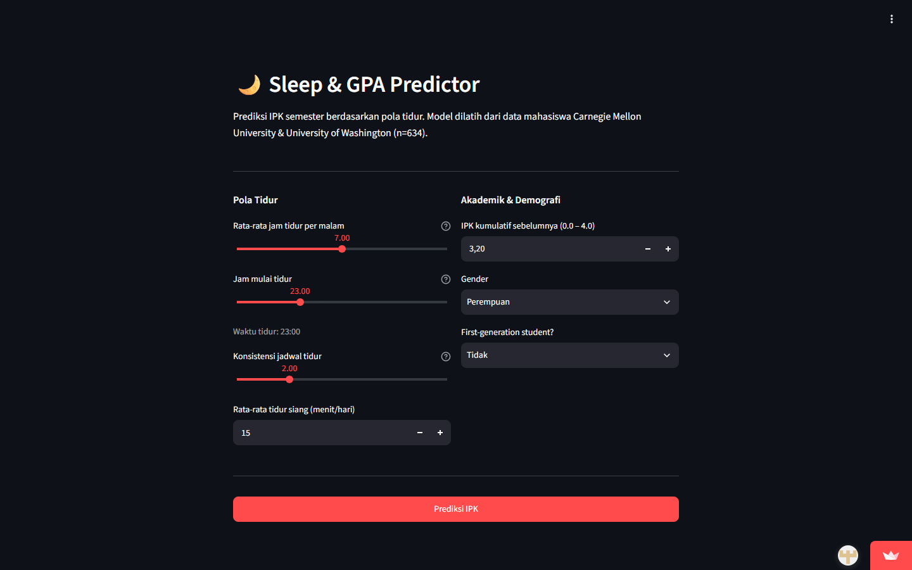

Machine Learning / Group Project01
Sleep & GPA Predictor
A Streamlit application that estimates academic performance from sleep duration, schedule consistency, prior GPA, and student context.
Project details
My contribution
Machine learning engineering and frontend work across data cleaning, exploratory analysis, model training, evaluation, and Streamlit deployment.
Approach
Cleaned a 634-student dataset, handled missing values, and trained a Gradient Boosting Regressor using an 80/20 split and 5-fold cross-validation.
Results
MAE: 0.296 GPA points. R²: 0.256. User testing averaged 4.5/5 for usefulness and 4/5 for usability.
What we learned
Prior GPA was the strongest predictor. Sleep features still contributed meaningfully, while the model remained limited by dataset scope and omitted academic-context variables.